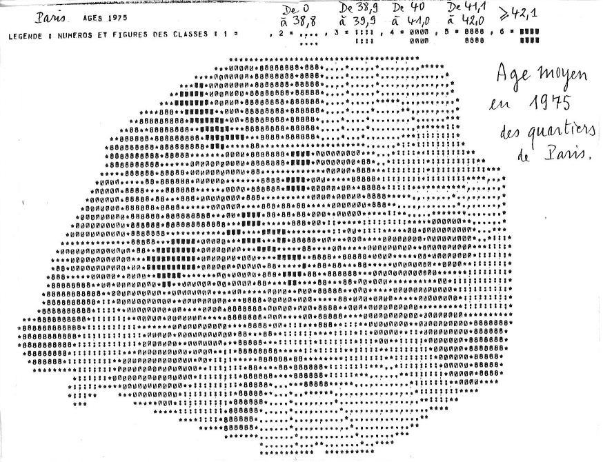
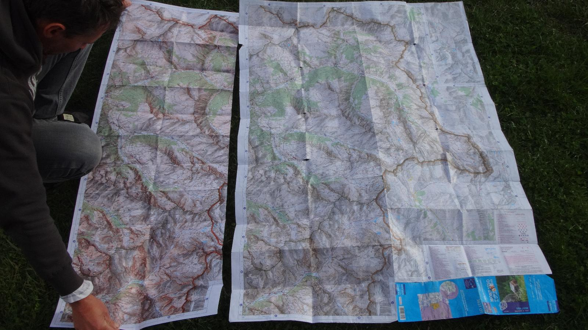
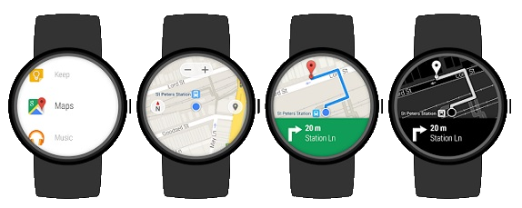
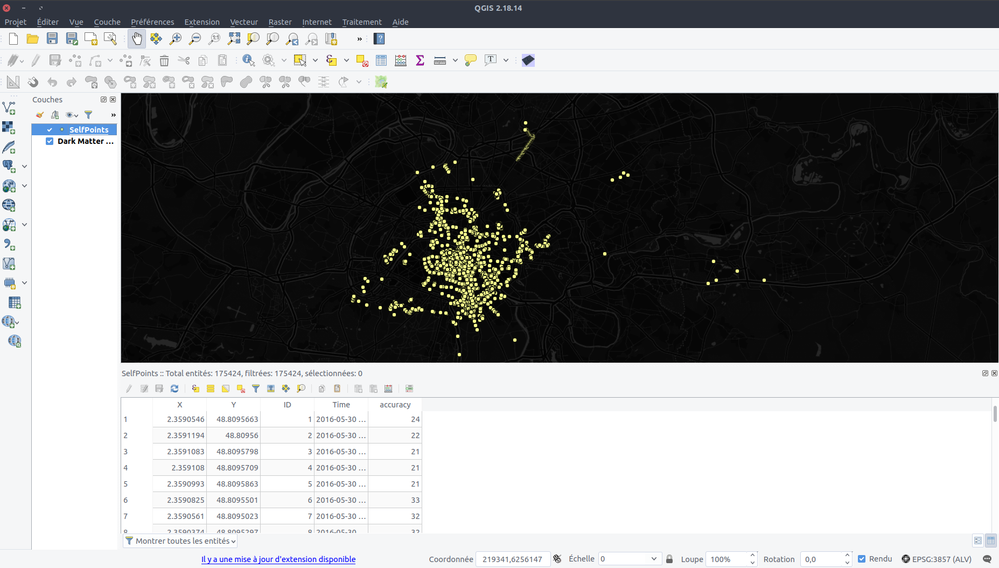
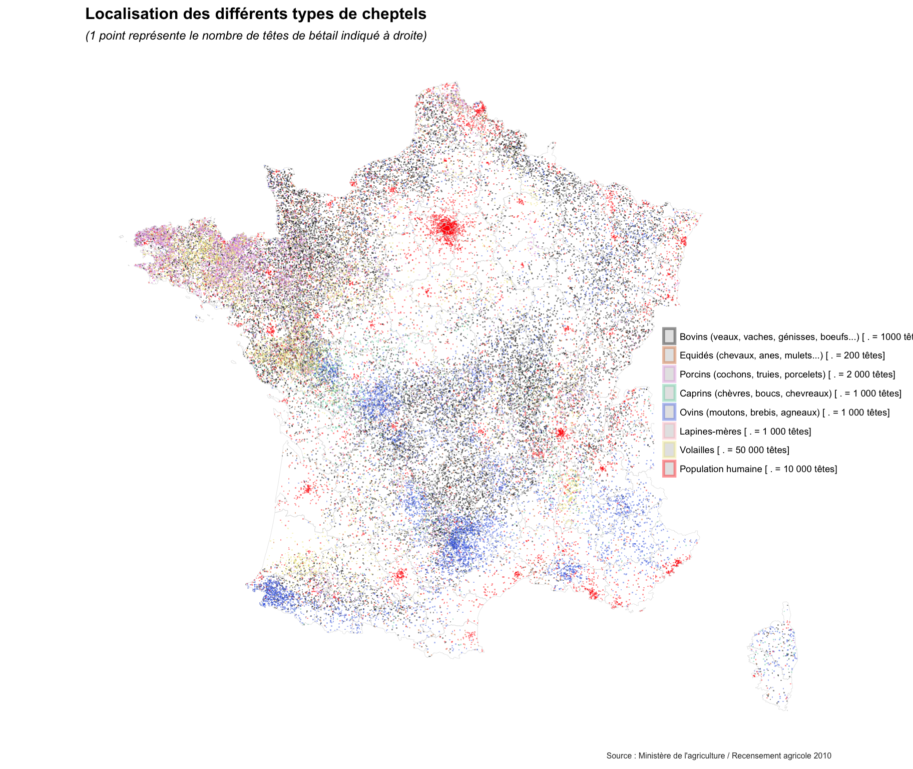
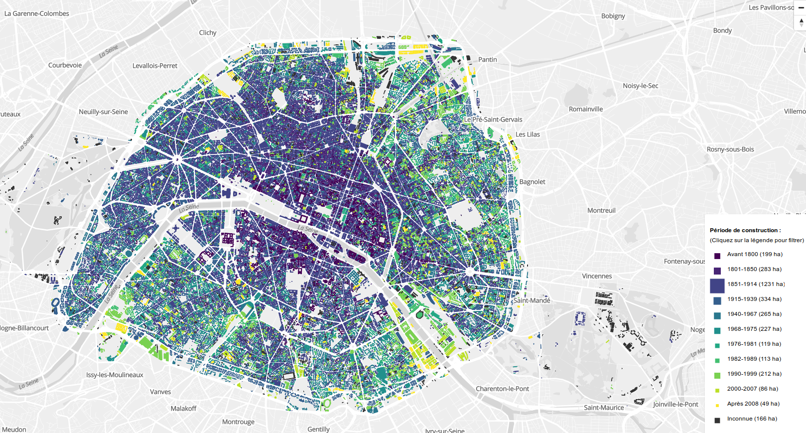
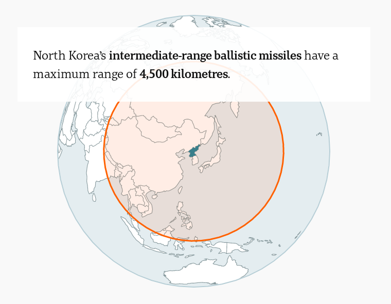

M2 Carthagéo - Histoire de la Cartographie
Nouvelles sources et représentations graphiques associées
Thomas Louail & Robin Cura
UMR Géographie-cités
06/12/2017
De nouvelles représentations ?
Cartographie traditionnelle
Qu’est-ce qui a changé ?
Pourquoi faire appel à de nouvelles représentations ?
Quels sont les changements qui pourraient demander la création de nouvelles pratiques cartographiques ?
- De nouveaux modes d’acquisition des données
- De nouvelles propriétés des données
- Des pratiques d’utilisateurs ayant évoluées
- De nouvelles attentes de la part des utilisateurs
Changements dans les pratiques des utilisateurs
De la carte papier à la carte numérique

Un espace restreint

- La carte doit être plus synthétique qu’auparavant
- On ne peut plus prévoir les dimensions de lecture d’une carte
Un support navigable
- L’utilisateur s’attend à pouvoir zoomer et se déplacer dans une carte
- La navigation doit être prévue et circonscrite.
De la carte numérique à la carte interactive
- L’utilisateur est désormais habitué à explorer interactivement la carte
- Il s’attend à ce qu’une carte lui propose différents fonds, des infobulles, de l’interactivité contextuelle (
onClick, menus détails etc.)
De la carte interactive aux cartes adaptatives

- On ne peut plus prévoir une carte statique unique
- Pour chaque carte réalisée, la lecture doit être pensée pour 3-4 supports…
- … et autant de modes d’interactions
Nouveaux usages et réponses cartographiques adaptées
- Nécessité de prévoir une combinaison importante de cas d’usages
- On ne peut plus se contenter de peaufiner une carte “statique” adaptée à tout
- Les cartographies et géovisualisations doivent tirer parti des outils existants permettant de simplifier l’adaptatibilité à tout support :
- Un support “universel” : les navigateurs internets
- Un formalisme “universel” : le combo “HTML” : (HTML, CSS, JS + SVG)
Le support cartographique évolue, mais n’implique pas pour autant de “nouvelles représentations”, tout au plus de nouvelles pratiques.
Mais les pratiques des utilisateurs ne sont pas les seules évolutions de cette dernière décennie :
Nouvelles sources de données :
Des données massives
Des données plus diverses
Des données plus rapides
==> de nouveaux besoins en représentation et en traitement.
Des données massives
Représentation

Quelle hiérarchie visuelle ?
Représentation
Représentation
The Racial Dot Map
Représentation
Heatmaps
Représentation
Agrégation
Représentation
Clusters
Représentation
Lissage
Problèmes techniques
Pour l’affichage :
- Les logiciels de SIG ne gèrent pas les données massives…
- … et les outils de DAO encore moins.
- Impossible d’afficher des millions d’entités vectorielles sur un ordinateur lambda : SIG ou web
=> Quand le vecteur n’est pas possible :- On agrège : Clusters, hexbins, densité etc.
- On rasterise : GeoServer, MapServer etc.
- Tuilage traditionnel (GeoServer, MapServer…) et plus moderne (Mapbox, CARTO, TileMill)
Problèmes techniques
Traitement :
- Les logiciels de SIG ne gèrent pas les données massives…
- … et les outils de DAO encore moins.
- Les données massives sont difficilement manipulables hors environnements propres aux données :
- Pré-traitement des données : R, Python, filtres intra-API
- Mise en forme et requête des données : Idem + SQL
Problèmes techniques
Traitement + création
Des données hétérogènes
Représentation
 M. Garnier (Matamix), 2017, Cartes à points pour bêtes à poils
Comment donner une vision synthétique de la répartition de chaque type ?
Représentation
- Technique des “small-multiples”
Représentation
 E. Côme, 2015, Bâti Paris
Comment donner une vision synthétique de la répartition de chaque type ?
Représentation
Selection
- Laisser l’utilisateur afficher ses propres classes
Représentation
Drill-down
- Y compris de manière itérative
Représentation
Multiplier les informations
Représentation
Guider le lecteur
Représentation
Guider le lecteur
Représentation
Guider le lecteur
 Martino, Byrd & Spraggon, 2017, Where can North Korea’s missiles reach?
Représentation
Laisser au lecteur le soin de comprendre lui-même les phénomènes cartographiés
Représentation
Laisser explorer les données massives et hétérogènes
Problèmes techniques
- Peu d’outils “clefs-en-main” pour créer des géovisualisation interactives…
- … besoin de passer par du développement.
- Javascript


- R

- Python

- Javascript
Des données éphémères
Retour sur la présentation des nouvelles sources
- D’immenses flux de données en permanence
- qui rendent les données rapidement obsolètes
- => On n’est plus dans le paradigme de mise à jour décennalle autour des données INSEE
- La carte doit être évolutive simplement et rapidement
- La documentation ne suffit plus : toute la production d’une carte doit être un “workflow”
- Penser toute la construction de la carte en termes d’automatisation et reproductibilité
- Par génération automatique depuis des API, depuis des données standardisées etc.